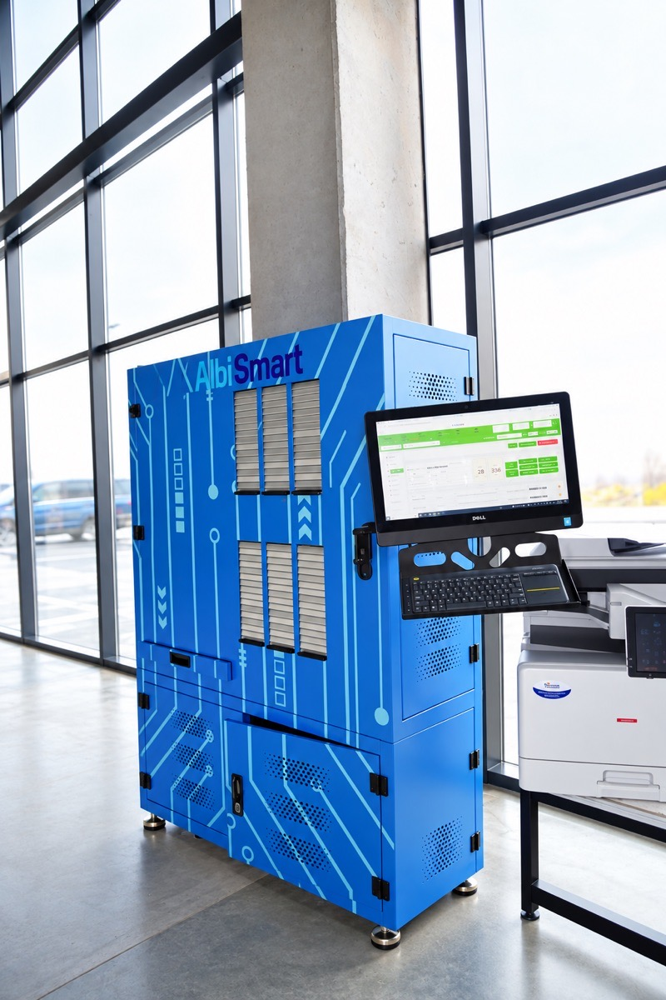
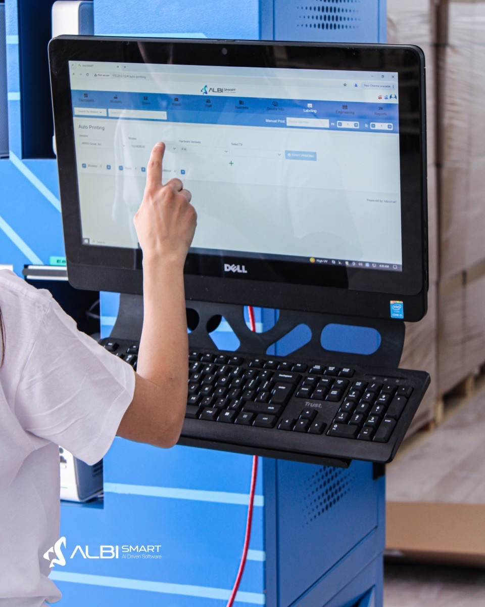

Automation platform
Albismart
The in-house platform that automates how we receive, test, repair, configure and ship every device. Fewer manual steps, the same standard on every unit, and a complete record for every serial number.
Why we built it
One system from intake to dispatch
At scale, quality depends on process, not on individual effort. Albismart is our proprietary platform for industrial management: it turns our repair and refurbishment know-how into guided, automated workflows that every technician and every shift follows in exactly the same way.
Every scan, test, repair and movement is recorded against the device's serial number. That gives our team real-time tracking on the floor, AI-driven performance data to improve yields, and you clear, reliable data on every unit you send us.
Traceable
Full history per serial number.
Consistent
One test standard for every unit.
Fast
Automated steps, shorter queues.
Visible
Live status on every order.
How it works
Six controlled steps, fully tracked
Every device follows the same path. Albismart decides what happens next based on the data from the previous step.
-
Intake
Devices are received, scanned and registered by serial number. Condition and accessories are logged on arrival.
-
Diagnostics
Automated test routines identify faults and record the full functional status of each device.
-
Repair
Technicians receive guided work orders based on the diagnostic results. Parts used are logged per unit.
-
QC
Every unit is re-tested and graded against defined criteria. Only devices that pass move forward.
-
Provisioning
Software, settings and enrolment are applied to your specification, and each device is labelled.
-
Dispatch
Units are packed, linked to orders and shipped, with tracking data shared automatically.
Testing racks
Many devices, tested in parallel
Albismart drives our modular testing racks, where many devices are tested side by side. Each slot reports its own status, so technicians see at a glance what passed, what failed and what is still running.
- Automatic recognition of each device model
- Slot-level status: pass, fail, running or empty
- Touchscreen control and wireless barcode scanning
- Device-specific fixtures and interfaces for each model


Test coverage
What we test on every device
The exact automation depends on the device model, the access we have and the configurations the customer provides.
Provisioning
- DHCP, TFTP, HTTP(S)
- NTP, USB or multicast
- Telnet / SSH
- SNMP / TR-069 where supported
Functional QA
- Power and boot behaviour
- Firmware loading
- Ethernet and HDMI output
- Remote control
- Portal and channel playback*
Traceability
- Serial and MAC registration
- Barcode scanning
- Inventory synchronisation
- Batch-level reporting
- Pass/fail documentation
* Portal and channel playback tests need the middleware address, access credentials and test streams from the customer.
Capabilities
What Albismart does on the floor
Serial-level traceability
Every scan, test result and part is recorded, and devices are linked to boxes, boxes to pallets and pallets to orders.
Automated testing
Standardised test sequences run with minimal manual input and no skipped steps.
Guided workflows
Technicians see the next action for each device, based on its data.
Live dashboards & reporting
Order progress, yields and turnaround times, visible as work happens.
Rules-based grading
Cosmetic and functional grades follow defined criteria, not individual opinion.
Reports & exports
Searchable device records, fault trends and batch reports, exported to CSV or your own format.
See Albismart in action
Book a walkthrough of the platform and the process we would set up for your devices.